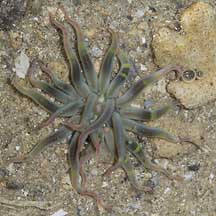
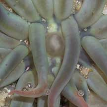
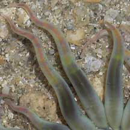
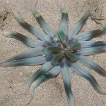
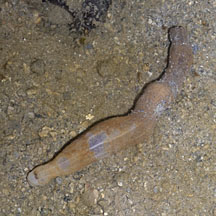
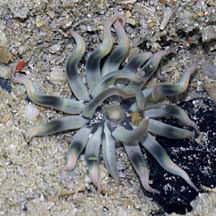
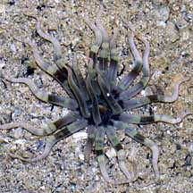
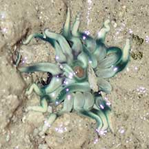
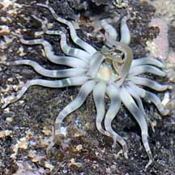
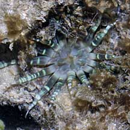

|
|
| sea anemones text index | photo index |
| Phylum Cnidaria > Class Anthozoa > Subclass Zoantharia/Hexacorallia > Order Actiniaria |
| Wiggly
reef star anemone awaiting identification* updated Nov 2019 Where seen? This elegant anemone with few tentacles held in wiggles is seen among coral rubble and living hard corals on our Southern shores. It is very shy and disappears instantly at the slightest sign of danger. Seen both at night and during the day. Features: Diameter with tentacles extended 4-5cm. Tentacles few (about 20), thick at the base and tapering to a slender tip. Most of the tentacles are usually held flat against the surface, arranged in pairs or sets of three, with the tips in 'wiggles'. Often, 5 of the tentacles are held upright forming a 'tent' over the mouth. Oral disk tiny. The mouth is often seen upturned.The tentacles come in various shades including pale blue, brown and red, tips in a contrasting paler shade. Sometimes with bands at mid-way along the tentacles, or a thin pink or orange stripe along the length from the tip. The body column appears to be covered with a leathery skin. Sometimes mistaken for the Wiggly sand star anemone looks similar but is brownish with many regular bands and found on the higher shore in silty lagoons. |
 Sentosa, Jun 07 |
 |
 |
 5 tentacles held upright in a tent over the mouth. Labrador, Aug 09 |
 The anemone when unearthed. Pulau Semakau, Aug 07 |
*Species are difficult to positively identify without close examination.
On this website, they are grouped by external features for convenience of display.
| Wiggly reef star anemones on Singapore shores |
On wildsingapore
flickr
|
| Other sightings on Singapore shores |
 Terumbu Berkas, Jan 10 |
 Pulau Berkas, May 10 |
 Pulau Berkas, Feb 22 Photo shared by Toh Chay Hoon on facebook. |
 Pulau Salu, Jun 10 |
 Pulau Salu, Jun 10 |
| pink&purple 'wiggly star' anemone @ t. raya 09Feb2009 from SgBeachBum on Vimeo. |